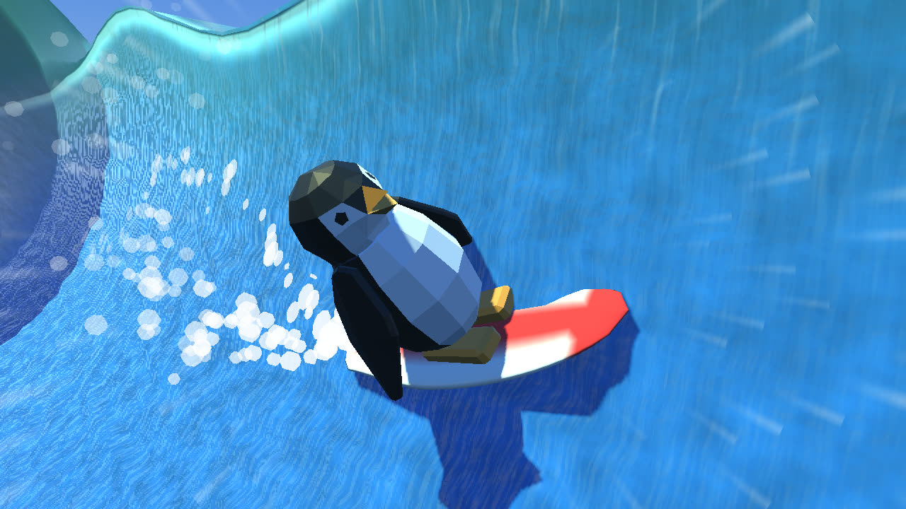
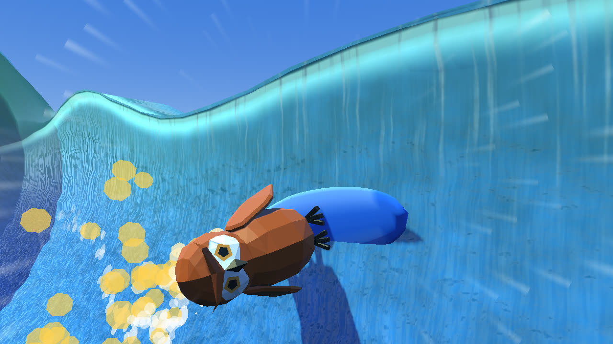
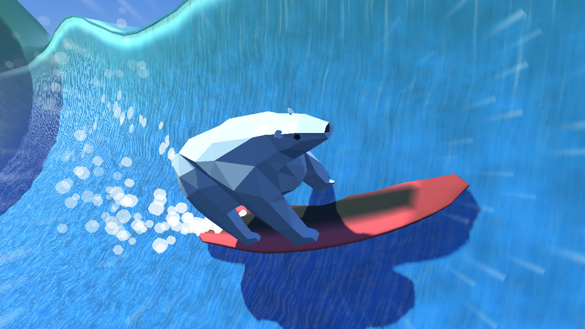

One-Button Surfing Game — Two-Person Team, One Month
This is the real web build, running on the page. Click or tap to start, then again to drop in. Every tap after that switches which way you're carving, and holding turns hard. The space bar works too. Hold on the title screen for endless mode.
Big Wave Day is a short one-button surfing game: an animal on a surfboard, one big wave, about half a minute. You are always carving. A tap switches which way you're turning, and holding turns hard. Flip at the top of a turn and you pump faster; with enough speed you can tuck into the barrel, or go straight up the face and launch off the lip. Nothing scores you while you ride. The wave dies down in front of an island, the game replays your best five seconds, and you go again.
Alex Duggan and I built it in Godot over a month. Alex modeled the animals and the boat, built out the end-of-wave card and wrote the music. I built the wave, the riding, the camera, the water and islands, and the sound effects. Apart from Alex's models and music, everything you see and hear is generated in code when the game starts.
The surfer never goes straight. Every tick the velocity rotates in the direction you're turning, so the board always points where it's travelling, and the button only decides which way it rotates: a tap flips it, and holding past 0.18 s turns nearly three times as hard. Gravity pulls along the face in proportion to how steep it is, and drag is quadratic, so speed is something you build and spend rather than a number you hold.
# Every tick. vel is in face space: x along the wave, y up the face, in m/s.
# Steer: rotate the velocity. The board always points where it travels.
var rate := deg_to_rad(sharp_turn_rate if is_sharp else turn_rate)
vel = vel.rotated(turn_dir * rate * delta)
# Gravity along the face: zero on the flats, full g on a vertical section. A committed straight climb
# for an air feels less of it, and less drag, so you reach the lip with the speed you built.
climb = smoothstep(climb_assist_from_deg, climb_assist_full_deg, heading_deg())
var g_along := gravity * gravity_scale * sin(wave.slope_angle(pos.x, pos.y)) \
* lerpf(1.0, climb_gravity_keep, climb)
vel.y -= g_along * delta
# Drag: quadratic, plus the sharp-turn scrub.
var k := (drag + scrub) * lerpf(1.0, climb_drag_keep, climb)
vel -= vel * vel.length() * k * deltaSpeed comes from timing. When you flip near the top of a climb, the game reads your heading at that instant against a curve, and a well-timed flip adds up to 4 m/s: half straight away, half fed in over the next 0.3 s as you come back down, so it feels like a push rather than a jolt. The same flip out on the flat shoulder is worth a quarter as much, which keeps good riding in the pocket. There's no number for a good pump, just a gold burst off the rail and a ding.
Airs come out of the same physics. Climb through the lip fast enough and you leave the face on a real ballistic arc, with the sideways drift steered so you always come back down onto the face. Playtesters said going for an air felt flat because the climb bled their speed, so a committed straight climb now feels about half the gravity and drag. Carving turns flip before it kicks in, so pumping is unchanged.
A basilisk pumps down the line, holds a bottom turn straight up the face and gets 2 m of air with a 290° spin.
Each animal gets a new board every wave, and the board's length sets how fast it turns: the carve rate scales with (reference length ÷ board length)0.8, times the animal's own agility. A seven-foot fish whips around; an eleven-foot gun turns like a truck.



The whole wave is one function of two numbers: how far down the line you are from the breaking point, and how high up the face. At any point the face is an arc of a circle whose radius and sweep depend on that distance: about 7 m tall and past vertical in the pocket, easing to a 3 m, 45° shoulder further down the line. Within 8 m of the break the lip keeps turning around a tighter circle and throws over into the barrel. Behind the break the profile collapses into a rounded pile of whitewater.
# d = metres ahead of the break, h = height up the face (0 trough, 1 lip, 1..2 the curl).
func arc_radius(d: float) -> float:
return lip_height(d) / (1.0 - cos(lip_angle(d)))
func local_point(d: float, h: float) -> Vector3:
# Position in the break's frame: x = d (not yet mirrored for direction).
if h > 1.0:
return _curl_point(d, (h - 1.0) * curl_angle(d))
var s := h * arc_length(d)
if s <= 0.0:
return Vector3(d, 0.0, -s)
var r := arc_radius(d)
var a := s / r
return Vector3(d, r * (1.0 - cos(a)), -r * sin(a))The surfer is simulated entirely in those two numbers and never touches a mesh. The same function places the board in 3D and builds the wave's vertices, so the face you see and the face you ride can't disagree. The mesh is built once and slides along with the break, while the water shader samples every pattern from world position, so the shape moves but the water stays put, and you can watch yourself slide across it.
Timed waves don't just stop. Over the last eight seconds the whole wave shrinks to a fifth of its size and the line runs out beside an island. The shader and the physics use the same size formula, so what you ride shrinks exactly as much as what you see. Pull far ahead of the break onto the flat shoulder and it quietly speeds up until the pocket is back under you, but it never chases a rider who has slowed down.
Letting the break catch up: the camera dollies into the tube as the lip throws over, then the penguin pumps back out.
Apart from Alex's animals, boat and music, everything is built when the game boots. The wave and the open ocean share the same water shading code, so there's no line where they meet, and around the home island the same water turns turquoise and see-through over a seabed of sand and rocks. The islands are put together from primitives (a sand dome, jungle hills, palms with leaning, tapered trunks, rocks at the waterline) and merged into one flat-shaded mesh each. In endless mode a chain of them keeps streaming in ahead, so you never end up surfing toward empty ocean.
The surfboards are lofted from elliptical rail sections, with a new length and colour every wave. Every sound effect is synthesized at startup: the splash off a turn, the ding of a pump, the whoosh of an air, the crash when the whitewater catches you, and the roar of the break, which gets louder as it closes in.
All of it has to run in a phone's browser, so it targets Godot's WebGL2 renderer. The wave is one mesh with one material, and its lumps, foam, the ribs of water running up the face and the glow at the lip are all done in the shader. The playable build at the top of this page is the same export that's on itch.io.
The end of a timed wave: it shrinks over its last seconds, the camera pulls out wide, and the line runs out in front of the island's shallows.
We worked from a short plan and a checkpoint list, with playtests along the way, and most of the big changes came out of those: the camera rig over the break, a bigger and rounder pocket, the climb assist for airs.
To check that a change did what it was meant to, I drove the real game headless with scripted bots that press the same single button a player does: a pumping bot that reports top speed, average speed and how far ahead of the break it gets; an air bot that measures speed at the lip and air height; and a stalling bot that lets the barrel catch it and checks how close the camera ever gets to the water. A change had to move the number it was for and leave the others alone. The climb assist took the air bot from about 1.5 m airs to over 2 m while the pumping bot's numbers stayed put.
The clips on this page were filmed the same way: a bot rides, and a small harness saves every frame.